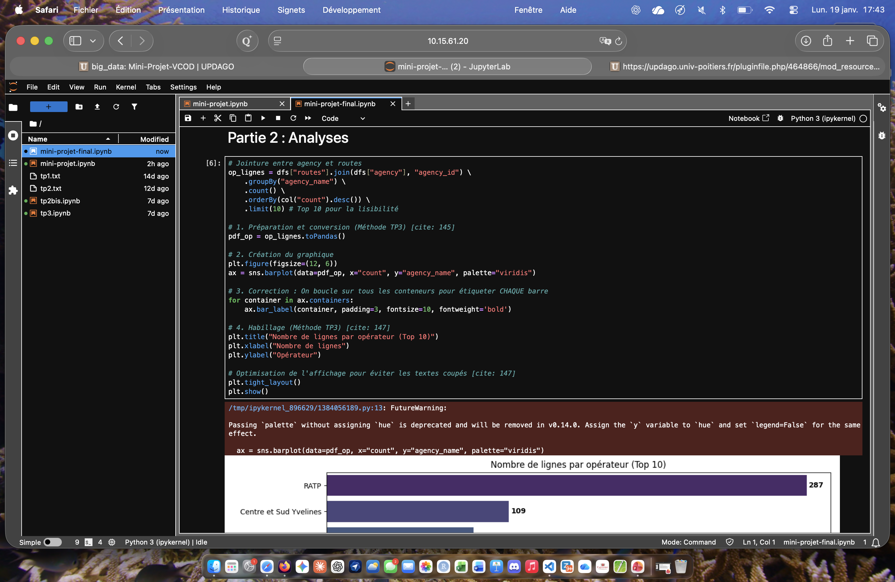

L'objectif de ce travail était de concevoir un notebook d'analyse de données sur les transports de Paris avec PySpark. J'ai utilisé une base de données volumineuse pour créer une série de graphiques et d'indicateurs descriptifs.
Pour mener à bien ce projet, j'ai d'abord exploré la base de données pour comprendre sa structure et identifier les variables pertinentes. J'ai ensuite planifié les différentes étapes de l'analyse, en définissant les types de graphiques et d'indicateurs que je souhaitais créer. J'ai utilisé JupyterLab comme environnement de développement pour écrire et exécuter mon code PySpark, en veillant à documenter chaque étape de mon processus d'analyse.
L'une des principales difficultés que j'ai rencontrées a été la gestion de la volumétrie des données. Travailler avec de grandes bases de données peut entraîner des problèmes de performance, et j'ai dû optimiser mon code pour assurer une exécution efficace. De plus, j'ai dû m'assurer que les graphiques et les indicateurs étaient clairs et pertinents pour l'analyse, ce qui a nécessité plusieurs itérations et ajustements.
Grâce à ce projet, j'ai renforcé mes compétences en analyse de données avec PySpark, en particulier dans la manipulation de grandes bases de données et la création de visualisations efficaces. J'ai également amélioré ma capacité à documenter mon travail de manière claire et structurée, ce qui est essentiel pour partager mes analyses avec d'autres.